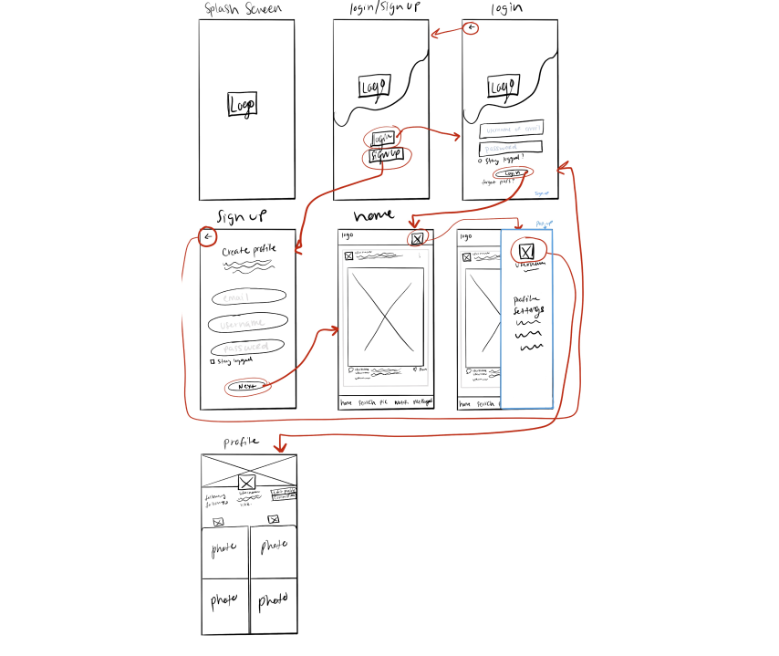
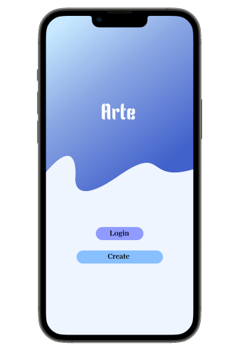
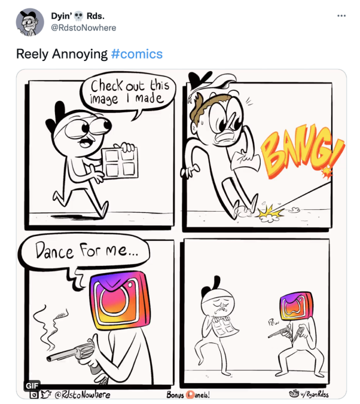
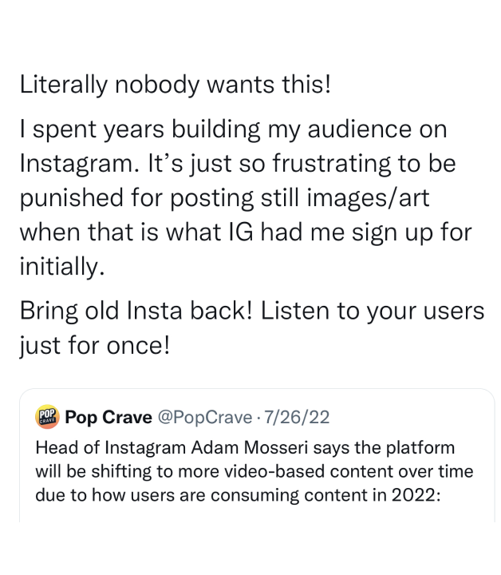
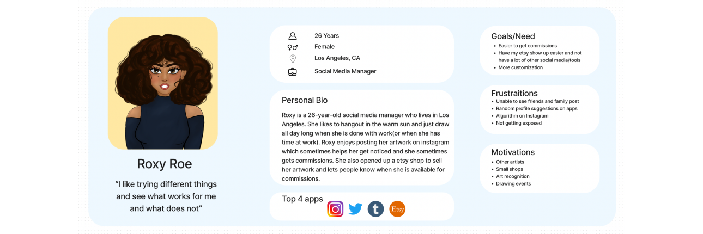

Goal
To have a space specifically for artist and small business to show their work, have easier commission
communication, all in one app.
Users want an app that’s mainly for photos, they want a place where they easily see post of friends,
artist and to have a smooth flow with not too much going on.
Arte is an app where you are only able to upload videos and see posts from those you follow. Also whenever
one of your followers has either commissioned someone or is a small business you will get a notification
pop-up when it will ask if you want to follow a small business page or not.
Overview
Problem
Solution
Interviews
Persona
Competitors
Sketches
Having so many apps, there needs to be one that has it all because I sometimes have to take a break from
one or two
Having so many apps, there needs to be one that has it all because I sometimes have to take a break from
one or two
Having so many apps, there needs to be one that has it all because I sometimes have to take a break from
one or two
Having so many apps, there needs to be one that has it all because I sometimes have to take a break from
one or two
Arte is a mobile app that focuses mainly on small business and self employed users. This app has a little
bit of what a lot of people want like:
Statuses
Commission section
Can only upload
photos no videos
Work examples
Customizable profiles
Top artist of the month
User Research
I did research on a few apps that are popular at the moment to see what were the good and the bad of it.
A lot of people love instagram, but they were noticing how they were trying to make it into a
video app and forgot that what people actually want is for it to stay mainly for photos.
What users want is to have an app that can do mostly everything. They want an app that is for posting
photos and for it to be easy to commission from small businesses. Users wants to only see their followers
post, but also have an option that they can get a commission from an artist and do it all in the app
instead of having to email them.
Roxy is a social media manager who also provides commissions on Etsy as part time. She spends her time
drawing on her tablet and posting on a few different social medias to make sure anyone can commission her.
One of the biggest competitors would be Instagram. The problem with instagram is that they seem to be
changing in a negative way where they are focusing mostly on video, but that isn’t what the users want.
There were a few features that instagram has which was added to Arte.


